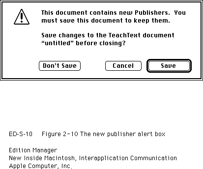

Legacy Document
Important: The information in this document is obsolete and should not be used for new development.
Important: The information in this document is obsolete and should not be used for new development.


Saving a Document Containing Sections
When saving a document that contains sections, you should write out each section record as a resource of type'sect'and write out each alias record as a resource of type'alis'with the same ID as the section record. See the chapter "Resource Manager" in Inside Macintosh: More Macintosh Toolbox for detailed information on resources.If a user closes a document that contains newly created publishers without attempting to save its contents, you should display an alert box similar to the one shown in Figure 2-10.
Figure 2-10 The new publisher alert box

If you keep the section records and alias records for each publisher and subscriber as resources, you can use the
ChangedResourceorWriteResourcefunction. If you detach the section records and alias records from each section, you need to clone the handles and use theAddResourcefunction. See the chapter "Resource Manager" in Inside Macintosh: More Macintosh Toolbox for detailed information on theChangedResource,WriteResource, andAddResourcefunctions.Use the
PBExchangeFilesfunction to ensure that the file ID remains the same each time you save a document that contains sections. Saving a file typically involves creating a new file (with a temporary name), writing data to it, closing it, and then deleting the original file that you are replacing. You rename the temporary file with the original filename, which leads to a new file ID. ThePBExchangeFilesfunction swaps the contents of the two files (even if they are open) by getting both catalog entries and swapping the allocation pointers. If the files are open, the file control block (FCB) is updated so that the reference numbers still access the same contents (under a new name). See Inside Macintosh: Files for detailed information on thePBExchangeFilesfunction.Listing 2-2 illustrates how to save a file that contains sections. If the contents of a publisher have changed since the last save, the application-defined procedure
MySaveDocumentwrites the publisher's data to its edition. It then writes out to the saved document the section records and alias records of all publishers and subscribers.MySaveDocumentcalls another application-defined routine,MyGetSectionAliasPair, to return a handle and resource ID to a section. As described earlier, you should write out the eligible section records and alias records as resources to allow for future compatibility. There are several different techniques for saving or adding resources; this listing illustrates one technique. The section handles are still valid after using theAddResourcefunction because this listing illustrates just saving, not closing, the file.Before you write out sections, you need to see if any publisher sections share the same control block. Publishers that share the same control block share the same edition.
If a user creates an identical copy of a file by choosing Save As from the File menu and does not make any changes to this new file, you simply use the
AssociateSectionfunction to indicate to the Edition Manager which document a section is located in.Listing 2-2 Saving a document containing sections
PROCEDURE MySaveDocument(thisDocument: MyDocumentInfoPtr; numberOfSections: Integer); VAR aSectionH: SectionHandle; copiedSectionH: Handle; copiedAliasH: Handle; resID: Integer; thisone: Integer; myErr: OSErr; BEGIN FOR thisone := 1 TO numberOfSections DO BEGIN aSectionH := MyGetSectionAliasPair(thisDocument, thisone, resID); IF (aSectionH^^.kind = stPublisher) & (aSectionH^^.mode = pumOnSave) & (MyCheckForDataChanged(aSectionH)) THEN DoWriteEdition(aSectionH); END; {end of for} {set the curResFile to the resource fork of thisDocument} UseResFile(thisDocument^.resForkRefNum); {write all section and alias records to the document} FOR thisone := 1 TO numberOfSections DO BEGIN {given an index, get the next section handle and resID } { from your internal list of sections for this file} aSectionH := MyGetSectionAliasPair(thisDocument, thisone, resID); {check for duplication of control block values} MyCheckForDupes(thisDocument, numberOfSections); {save section record to disk} copiedSectionH := Handle(aSectionH); myErr := HandToHand(copiedSectionH); AddResource(copiedSectionH, rSectionType, resID, ''); {save alias record to disk} copiedAliasH := Handle(aSectionH^^.alias); myErr := HandToHand(copiedAliasH); AddResource(copiedSectionH, rAliasType, resID, ''); END; {end of for} {write rest of document to disk} END;